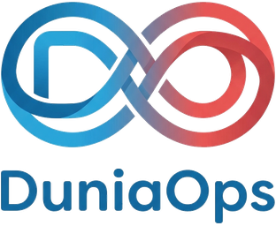

DevOps & Cloud Consultancy
Start with one critical delivery path. Our DevOps Health Check maps how changes reach production, identifies the most important delivery and reliability risks, and gives your team a practical, staged improvement plan.
A focused assessment before a larger DevOps commitment
When releases feel risky, incidents are difficult to diagnose or cloud decisions lack clear evidence, it can be tempting to start with a tool change or a broad transformation. A short, bounded assessment helps you see the current delivery system first and choose work in proportion to the risks that matter to your product.
We review one critical delivery path, the relevant cloud or infrastructure view, deployment evidence, incidents and cost context. The result is a current-state map, the main delivery and reliability risks, and a staged improvement backlog. The assessment does not assume that Kubernetes, a migration or a rewrite is the answer.
CI/CD pipelines
Automate build, test and deployment steps with GitHub Actions, GitLab CI or Azure DevOps, shaped around your review and release controls.
Infrastructure as code
Use Terraform to make suitable infrastructure changes more reviewable and repeatable, with environment boundaries documented.
Containers & Kubernetes
Applications containerised and orchestrated where it makes sense — and kept simpler where it doesn't.
Cloud migration
Planned, staged moves to AWS, Azure or GCP — from on-premises servers or from an outgrown hosting setup.
Observability
Monitoring, logging, tracing and alerting that help teams understand service behaviour and investigate issues.
Cost optimisation
Cloud bills reviewed against usage evidence, with right-sizing, commitment options and cleanup prioritised by measurable value.
What you take away from a DevOps Health Check
A view of the current path
See how a change moves from source control through build, test, deployment and production operation.
The risks that matter most
Separate delivery, reliability and operational concerns from improvements that can safely wait.
A staged improvement backlog
Agree practical next steps, dependencies and ownership before committing to a wider implementation.
Evidence, not a savings promise
Cloud cost options are assessed against usage and service needs; no fixed percentage saving is guaranteed.
What a measured DevOps improvement can support
A clearer release path
Automated checks and repeatable deployment steps can reduce manual effort, depending on the starting point and required controls.
Earlier feedback
Appropriate tests, staged changes and useful monitoring can help teams identify problems sooner.
Known recovery steps
Documented rollback and recovery procedures make responsibilities clearer; they should be tested against the service's real needs.
More focus on product work
Removing repeatable manual tasks can give engineers more time for planned product improvements.
DevOps consultancy, honestly answered
What does the DevOps Health Check include?
We review one critical delivery path, the relevant cloud or infrastructure context, deployment evidence, incidents and cost context. You receive a current-state map, the main delivery and reliability risks, and a staged improvement backlog. Any implementation is separately scoped.
Which platforms and tools do you work with?
AWS, Azure and Google Cloud; Docker and Kubernetes; GitHub Actions, GitLab CI and Azure DevOps; Terraform for infrastructure as code.
Can you reduce our cloud bill?
We can identify avoidable spend through usage evidence, right-sizing, commitment options, storage lifecycle policies and orphaned-resource reviews. We model the trade-offs before changing anything and measure the result rather than promising a fixed saving.
Do you offer ongoing support?
Yes — we can operate what we build through monitoring, patching and incident response on an agreed monthly arrangement, or hand over fully to your team with documentation and training. For broader ownership of an existing product, see our Application Support & Software Maintenance service.
Related guidance and support
For a Kubernetes-specific decision about ongoing platform ownership, read our guide to choosing a consultant or permanent platform hire. For the broader question of when outside delivery support is useful, see when to hire a DevOps consultancy.
If your main need is ownership of a live product built by another team, explore Application Support & Software Maintenance. If delivery has stalled or production is unstable, start with Software Project Rescue.

How does your code reach production?
If the answer involves a checklist and crossed fingers, let's talk.